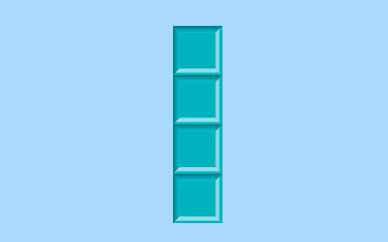

Piezas de TetriSTEM
Inicio
Historia
Galería
Jugabilidad
Pieza"T"
Pieza "N"
Pieza "L" invertida

Pieza "I" (barra o linea)
Explorar en Detalle
Haz clic en los enlaces para ver las imágenes con mayor resolución en una nueva pestaña:
Ver Pieza T en HD
Ver Pieza N en HD
Ver Pieza L en HD
Ver Pieza I en HD